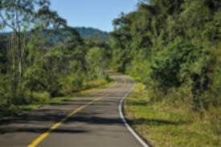
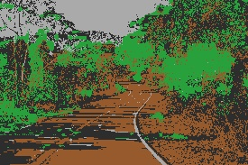

Clasificación de texturas y filtro de suavizado 3x3 utilizando Python
Esta sección presenta la implementación de algoritmos de procesamiento de imágenes trabajando directamente a nivel de píxel. Se desarrollaron dos procesos principales: clasificación de texturas y aplicación de un filtro de suavizado promedio de 3x3 píxeles.


Los porcentajes fueron obtenidos recorriendo todos los píxeles de la imagen y clasificando cada uno según sus valores RGB y brillo.
El filtro de suavizado recorre cada píxel de la imagen y calcula el promedio de los valores RGB de sus vecinos dentro de una ventana de 3x3 píxeles. Este proceso reduce el ruido visual y suaviza las transiciones de color.
La clasificación de texturas analiza los valores RGB y el brillo de cada píxel para identificar superficies como vegetación, tierra, cemento o asfalto/sombra. Cada categoría se representa con un color diferente en la imagen final.